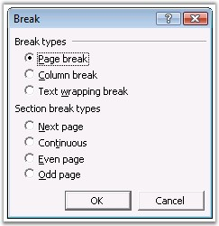

Break class represents a break in the Word document. To insert a break, open the Insert menu and click Break in Microsoft Word.

Figure 68: Break Dialog Box
You can use the AppendBreak function of WParagraph to insert a break by using DocIO. BreakType property specifies the type of the break. The following are the types of breaks supported by the Break class.
· PageBreak
· ColumnBreak
· LineBreak
 Note: Now, direct support is provided to insert
section breaks. Section breaks are inserted by calling the method
InsertSectionBreak.
Note: Now, direct support is provided to insert
section breaks. Section breaks are inserted by calling the method
InsertSectionBreak.
Class Hierarchy
ParagraphItem
|
WSymbol
Public Constructors
|
Name |
Description |
|
Break.Break (IWordDocument) |
Initializes a new instance of the Break class. |
|
Break.Break (IWordDocument, BreakType) |
Initializes a new instance of the Break class. |
Public Properties
|
Name |
Description |
|
BreakType |
Gets the type of the break. |
|
EntityType |
Gets the type of the entity. |
The following example illustrates how to use the Break class.
|
[C#]
IWordDocument doc = new WordDocument(); IWSection section = doc.AddSection(); IWParagraph para = section.AddParagraph();
para.AppendText("Before line break"); para.AppendBreak(BreakType.LineBreak); para.AppendText("After line break");
IWParagraph pageBreakPara = section.AddParagraph(); pageBreakPara.AppendText("Before page break"); pageBreakPara.AppendBreak(BreakType.PageBreak); pageBreakPara.AppendText("After page break");
doc.Save("Breaks.doc"); |
|
[VB.NET]
Dim doc As IWordDocument = New WordDocument() Dim section As IWSection = doc.AddSection() Dim para As IWParagraph = section.AddParagraph()
para.AppendText("Before line break") para.AppendBreak(BreakType.LineBreak) para.AppendText("After line break")
Dim pageBreakPara As IWParagraph = section.AddParagraph() pageBreakPara.AppendText("Before page break") pageBreakPara.AppendBreak(BreakType.PageBreak) pageBreakPara.AppendText("After page break")
doc.Save("Breaks.doc") |